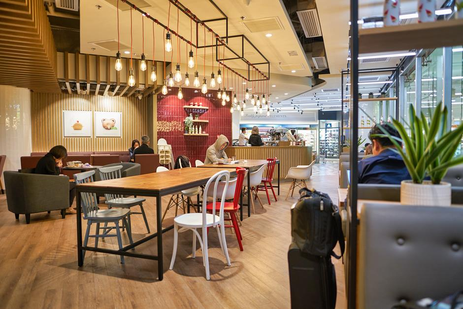
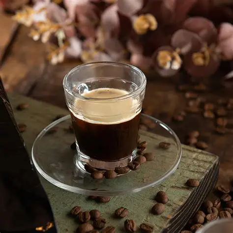
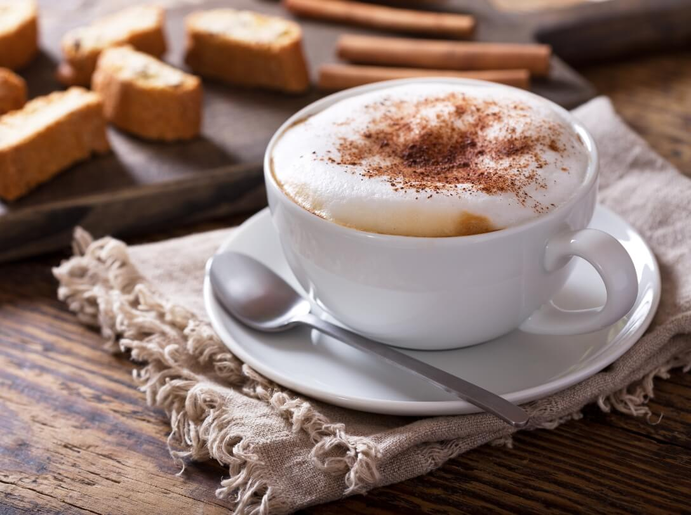
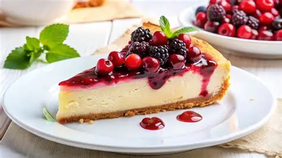
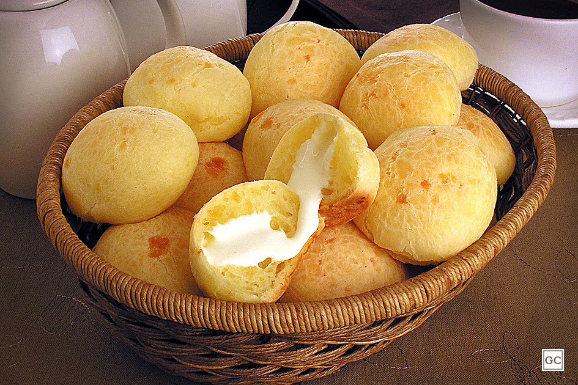
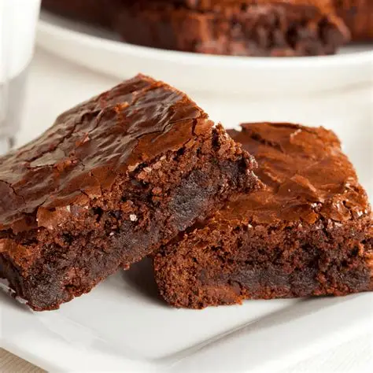

Onde o código compila e o café extrai a perfeição.
Venha desacelerar, saborear um café especial de origem sustentável e encontrar o seu espaço para criar, trabalhar ou simplesmente relaxar.

Venha desacelerar, saborear um café especial de origem sustentável e encontrar o seu espaço para criar, trabalhar ou simplesmente relaxar.

Feito com grãos 100% arábica de origem sustentável, corpo aveludado e notas de chocolate amargo. O carro-chefe!

Leite vaporizado na medida certa, espresso encorpado e um toque de cacau orgânico polvilhado por cima.

Para quem gosta de apreciar a sutileza das notas florais e frutadas do nosso microlote especial da semana.

A receita secreta da casa, cremosa e com aquela calda azedinha que contrasta perfeitamente com o doce do café.

Aquele pão de queijo quentinho com queijo minas artesanal, recheado com carne louca desfiada ou requeijão de corte.

Molhadinho por dentro, com casquinha crocante e feito com chocolate de origem ética.

"O melhor espresso da cidade inteira!
Passo horas codando lá na Café & Código.
O ambiente é perfeito, a internet voa e o café
me mantém acordado até nos dias de deploy
mais difíceis. Recomendo demais!"
"Sou apaixonada pela história do café
sustentável deles e pelo Método V60.
O atendimento é impecável e o espaço
tem uma energia muito boa para desenhar
wireframes e focar nos projetos.
Meu escritório favorito fora de casa!"
"O pão de queijo recheado combinado
com o cappuccino artesanal virou meu
ritual de todas as terças-feiras.
É ótimo ver um lugar que une
café de altíssima qualidade com
uma pegada moderna e consciente."
"Lugar incrível! A reserva de mesa
pelo WhatsApp facilita muito a minha
vida quando preciso reunir a equipe
para um brainstorm fora da firma.
O cheesecake de frutas vermelhas
é simplesmente covardia de tão bom."

A Café & Código nasceu da paixão por duas artes que exigem precisão,
paciência e alma: a programação e a extração do café perfeito. Acreditamos que todo grande código começa com uma boa xícara de café, e por isso fazemos questão de trabalhar exclusivamente com grãos de origem sustentável, cultivados por pequenos produtores que respeitam o meio ambiente e garantem um comércio justo. Nosso espaço foi pensado para ser o refúgio de desenvolvedores, criativos e entusiastas que buscam um ambiente acolhedor, com boa conexão, café de excelência e muita inspiração para dar vida aos próximos projetos.